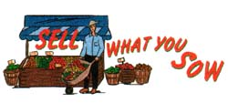

The demand for organic
Tim and Jill Stark, owners of Eckerton Hill farms in Hamburg, PA, have been selling their exotically colored and flavored peppers since 1995. The business made a $25,000 profit last year. ""We could have made our money just selling to restaurants,"" says Tim, ""but getting a price worth our time was too tough. If you have a great product and you know it, you should be bold and charge what you think you're worth...and don't be afraid to start small.""